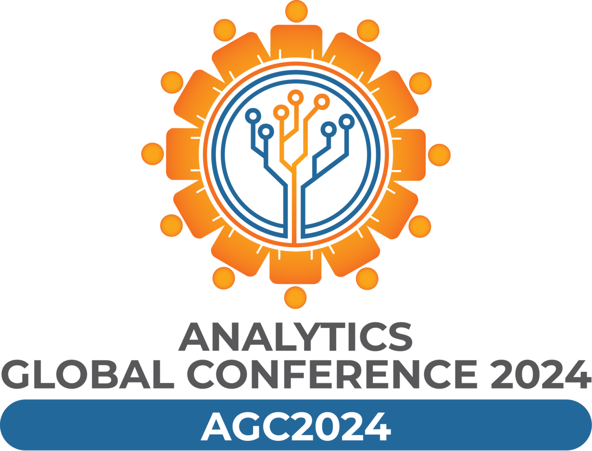

Analytics Global Conference 2024


| Session | Speakers | From | To |
|---|---|---|---|
| Registration | 08:30 AM | 10:00 AM | |
| Opening Ceremony (Lighting the Lamp, Saraswati Vandana, Inaugural Addresses) | Chief Guest Mr. Miraj Shah (Vice Chairman Governing Body, The Bhawanipur Education Society College - Distinguished Guest) Prof Indranil Bose (Prof Indranil Bose, Nykaa Chair in Consumer Technology, Professor of Information Systems, IIM Ahmedabad,), Mr Ambarish Dasgupta (Senior Partner, Intueri Consulting LLP.), Mr Cecil Antony (Chief Mentor, NSHM Knowledge Campus), | 10:00 AM | 11:30 AM |
| Keynote Session - Foundation Models for Generalist Geospatial Artificial Intelligence | Dr. Kamal Das (Senior Research Scientist in Climate & Sustainability, IBM Research) | 11:45 AM | 12:15 PM |
| Panel discussion - Space Data Analytics for Industrial, Social, and Environmental Advantages | Prof Aditya Bagchi (Retired Professor & Dean of Studies, Indian Statistical Institute - panel moderator) Dr. Tapan Mishra (Founding Director, Sisir Radar Pvt Ltd. Former Director, SAC, Ahmedabad, Former Director, PRL, Ahmedabad) Dr Kamal Das (Senior Research Scientist in Climate & Sustainability, IBM Research) | 12:15 PM | 01:30 PM |
| Lunch | 01:30 PM | 02:15 PM | |
| Panel discussion – Urban Development, Disaster Management – Sustainable Infrastructure Development with AI | Prof Gupinath Bhandari (Associate Professor, Department of Civil Engineering; Coordinator, Centre for Disaster Preparedness & Management, Jadavpur University, Kolkata, panel moderator) Mr. Debashis Sen (IAS (Retd.), Founder Director New Bengal Consulting) Mr Abdul Ghani (Spl Secretary, Sunderban Affairs Deptt) Prof Ashis Kumar Paul (Professor, Department of Geography and Environment Management, Vidyasagar University Midnapore, West Bengal, India) Prof Prasun Das (Sr. Technical Officer, SQC and OR Unit, Kolkata, Statistical Quality Control and Operations Research Division) | 03:00 PM | 04:15 PM |
| Panel discussion – The Security Dilemma with Large Scale AI | Prof Chandan Mazumdar (Professor, Jadavpur University - panel moderator), Dr. Indranil Mitra (Managing Director and Leader – AI and Advanced Analytics –PwC) Mr. Dhrubajyoti De (IPS, Jt. CP Security, Kolkata Police) Mr. Aditya P Dutta (Executive IT Architect, AI & Automation, IBM) Dr. Himadri Sekhar Pramanik (Senior Consultant and Trusted Advisor; Corporate Marketing Research and Advisory) | 04:30 PM | 05:45 PM |
| Students Debate on AI Prelims | Mr. Dattatreya Datta (Strategy Consultant, Intueri Consulting LLP), Ms. Soma Banerjee (Co-founder and CEO, Business Brio), Prof Soujanya Pudi (NSHM Knowledge Campus) | 05:45 PM | 06:30 PM |
| Session 1 - Paper presentations | Session chairs: Dr. Moumita Chatterjee (Aliah University), Dr. Reeti Debnath (NSHM Knowledge Campus), Dr. Sanjay Goswami (NSHM Knowledge Campus) | 11:45 AM | 01:30 PM |
| Session 2 - Paper presentations | Session chairs: Dr. Deepankar Sinha (IIFT), Dr. Chandrima Ganguly (NSHM Knowledge Campus), Dr. Ashutosh Kar (NSHM Knowledge Campus) | 02:30 PM | 04:15 PM |
| Session 3 - Paper presentations | Session chairs: Dr. Anupama Chanda Mitra (BIMS), Dr. Nilanjana Sinha (NSHM Knowledge Campus), Dr. Bijoy Mondal (NSHM Knowledge Campus) | 04:30 PM | 06:00 PM |
| Session | Speakers | From | To |
|---|---|---|---|
| Keynote session | Swami Vedatitananda (In-charge, Ramakrishna Mission Shilpamandira, Belur Math) | 10:00 AM | 10:30 AM |
| Panel discussion – Generative AI in Corporate Sector: Boon or Bane? | Mr. Dattatreya Datta (Strategy Consultant, Intueri Consulting LLP - panel moderator) Prof Pinakpani Pal (Professor, Indian Statistical Institute) Mr. Subhamoy Chakraborti (CTO, ABP) Mr. Arka Chattopadhyay (Consultant, Intueri Consulting LLP., Kolkata) Anubhav Singh (Co-founder, Dynopii Inc.) | 10:30 AM | 11:45 AM |
| Panel discussion - Quantum and 5G for AI: The Technology Pathway | Prof Deepankar Sinha (Head - Research Division, Kolkata Campus, Knowledge Partner [IIFT] - G20 TIWG: PI4, Programme Director - Centre for Trade and Logistics (CFTL), Kolkata Campus, Indian Institute of Foreign Trade (IIFT) - panel moderator), Dr Sumit Misra (SVP, Innovation Process, RS Software Ltd.) Prof Arpita Maitra (Associate Professor, Institute for Advancing Intelligence, TCG Centres for Research and Education in Science and Technology (TCG CREST), Kolkata) Prof Iti Saha Misra (Professor and former Head of the Department of Electronics and Telecommunication Engineering, Jadavpur University, Kolkata) Arindam Ghosh (Managing Director - Xco One) Chinmohan Biswas (Chief Telecom Architect & Telco Industry lead, IBM) | 12:00 PM | 01:30 PM |
| Lunch | 01:30 PM | 02:30 PM | |
| Students Debate on AI Semi-Final, Final | Mr. Dattatreya Datta (Strategy Consultant, Intueri Consulting LLP - panel moderator), Ms. Soma Banerjee (Co-founder and CEO, Business Brio), Prof Soujanya Pudi (NSHM Knowledge Campus) | 02:30 PM | 04:00 PM |
| Keynote Session – Statistical Learning or Machine Learning? | Prof Bimal Roy (Professor, Applied Statistics Unit, Indian Statistical Institute, Kolkata, Head, Cryptology Research Group, Indian Statistical Institute, Kolkata, Founder and General-Secretary, Cryptology Research Society of India) | 04:00 PM | 04:30 PM |
| Valedictory Session | 04:30 PM | 05:30 PM |
| Session 4: Paper presentations | Machine Learning, Deep Learning and Text Analytics Session chairs: Dr. Samarjit Kar (Professor, Department of Mathematics, National Institute of Technology Durgapur, India), Dr. Swapna Datta Khan (NSHM Knowledge Campus), Dr. Swapan Das (NSHM Knowledge Campus) | 10:00 AM | 11:45 AM |
| Session 5: Paper presentations | Machine Learning, Deep Learning and Text Analytics Session Chair: Dr. Dhrubasish Sarkar (Professor and the Principal of Supreme Institute of Management & Technology), Dr. Soumendra Nath Bandopadhyay (NSHM Knowledge Campus), Dr. Jaya Bhattacharjee (NSHM Knowledge Campus) | 12:00 PM | 01:30 PM |
| Poster presentation | Judge: Dr. Dhrubasish Sarkar, Prof Prashant Karn, Dr. Sanjay Goswami | 02:30 PM | 04:00 PM |
Prof Suparna Dhar
suparna.dhar@nshm.com
Ph:9830213143 / 9836206535
Prof Majid Mallik
majid.mallik@nshm.com
Ph:9830590697
Prof Sanjay Goswami
sanjay.goswami@nshm.com
Ph:8337034756
Prof Madhurima Paul
madhurima.paul@nshm.com
Ph:8697158972
Prof Sangita Mazumdar
sangita.mazumdar@nshm.com
Ph:9831067835
Address
NSHM Knowledge Campus,
124, 60 BL Saha Road, Tara Park, Behala, Kolkata, PIN - 700053
Email
asi.kolchp@gmail.com